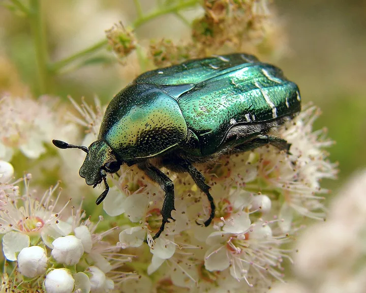
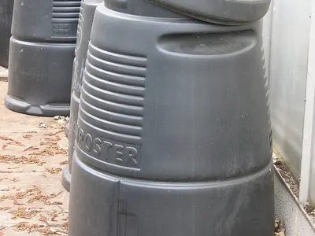
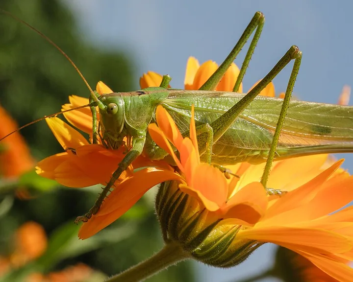
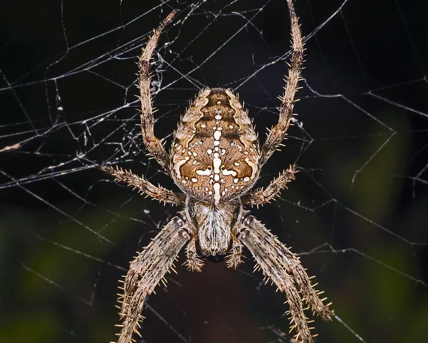
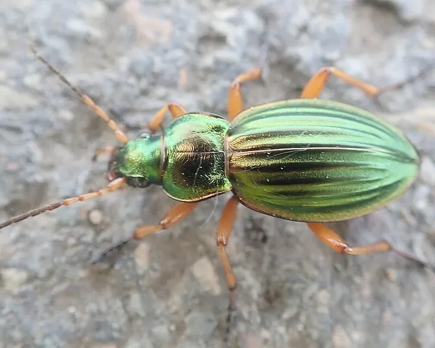

Goldglänzender Rosenkäfer
Cetonia aurata
Nützling1,4–2 cmtagaktiv
BlütenRasen & Boden
Metallisch grün glänzender Käfer auf Rosen und Holunderblüten. Seine Larven leben im Kompost und sind dort Helfer. Im Mai und Juni sitzt er in der Sonne auf Rosen, Holunder und Doldenblüten.
So erkennst du den Goldglänzenden Rosenkäfer
- Metallisch grün bis goldgrün glänzend
- Flügeldecken mit feinen weißen Querflecken
- Fliegt mit geschlossenen Flügeldecken
Auch zu finden unter: Grün glänzender Käfer
Wann ist der Goldglänzende Rosenkäfer zu sehen?
kaum zu sehenaktivbeste Zeit
Aktiv: April, Mai, Juni, Juli, August und September. Hauptzeit: Mai und Juni.
Der Goldglänzende Rosenkäfer ist von April bis September zu sehen. Besonders viel los ist im Mai und Juni. Im Mai und Juni sitzt er in der Sonne auf Rosen, Holunder und Doldenblüten.
Lebensweise
Was frisst der Goldglänzende Rosenkäfer?
Der Käfer frisst Pollen und Blütenteile. Die Larven ernähren sich von verrottendem Pflanzenmaterial und machen daraus Humus.
Engerling im Kompost
Seine Larven sehen aus wie die Engerlinge von Maikäfer und Gartenlaubkäfer. Sie fressen aber keine lebenden Wurzeln.
Gut zu wissen
Rosenkäfer sind besonders geschützt. Ihre Larven gehören in den Kompost, nicht in den Müll.
So hilfst du dem Goldglänzenden Rosenkäfer
Larven im Kompost lassen, morsches Holz liegen lassen und ungefüllte Rosen, Holunder und Wildsträucher pflanzen.
Larven unterscheiden
Leg eine Larve auf eine glatte Fläche: Rosenkäferlarven kriechen auf dem Rücken, Maikäfer-Engerlinge bleiben gekrümmt auf der Seite liegen.
Passend dazu
- Beispielfoto · Foto: Caroline Ford, CC BY-SA 3.0 – Lizenzangaben im Bildnachweis

Thermokomposter
Auswahl bei Amazon
Macht aus Küchen- und Gartenresten Humus. Regenwürmer, Blindschleichen und Igel freuen sich über den warmen Platz.
Bei Amazon ansehen Thermokomposter (Werbelink, öffnet in neuem Fenster) Ratgeber: Nützlinge fördern - Beispielfoto · Foto: Michel Helmecke, CC BY-SA 2.0 de – Lizenzangaben im Bildnachweis
 Unser Tipp
Unser TippBecherlupe mit Vergrößerung
Auswahl bei Amazon
Insekten kurz einfangen, genau ansehen und wieder freilassen. Ideal auch für Kinder.
Bei Amazon ansehen Becherlupe mit Vergrößerung (Werbelink, öffnet in neuem Fenster) - Beispielfoto · Foto: U.S. Fish and Wildlife Service Southeast Region, Public domain – Lizenzangaben im Bildnachweis
Bestimmungsbuch Tiere im Garten
Auswahl bei Amazon
Ein handliches Buch mit Fotos hilft, auch seltenere Besucher sicher zu erkennen.
Bei Amazon ansehen Bestimmungsbuch Tiere im Garten (Werbelink, öffnet in neuem Fenster)
Werbelink: Wenn du über diesen Link etwas kaufst, erhält der Gartentierkompass eine kleine Provision von Amazon. Für dich ändert sich am Preis nichts. Als Amazon-Partner verdiene ich an qualifizierten Verkäufen.
Nicht verwechseln: Feldmaikäfer
Die Rosenkäferlarve kriecht auf dem Rücken und lebt im Kompost. Der Maikäfer-Engerling frisst Wurzeln im Rasen.
Foto: Stephan Sprinz (Quelle, öffnet in neuem Fenster), CC BY 4.0 (Lizenztext, öffnet in neuem Fenster), Wikimedia Commons
Goldglänzender Rosenkäfer oder Feldmaikäfer? Alle Unterschiede · Feldmaikäfer im Porträt
Mehr erfahren
- Wikipedia: Goldglänzender Rosenkäfer (öffnet in neuem Fenster)
- Beobachtungen bei iNaturalist (öffnet in neuem Fenster)
- Vögel im Garten im Vogelkompass
Von Nico Schober · Stand: 19. November 2026 · Angaben abgeglichen mit Wikipedia und gängiger Bestimmungsliteratur
Oft in der Nähe
-

tagaktivnachtaktivGrünes Heupferd
NützlingGroße, grasgrüne Heuschrecke mit langen Fühlern, die an Sommerabenden laut aus Bäumen und Hecken zirpt.
-

tagaktivnachtaktivGartenkreuzspinne
NützlingDie Spinne mit dem weißen Kreuz auf dem Rücken und den großen Radnetzen zwischen Sträuchern.
-
 tagaktiv
tagaktivGemeine Wespe
Teils NützlingGelb-schwarz mit Wespentaille: Die Arbeiterinnen jagen Insekten und kommen im Spätsommer gern an den Kaffeetisch.
-

tagaktivnachtaktivGoldlaufkäfer
NützlingMetallisch goldgrün glänzender Laufkäfer, der flink über die Beete rennt und Schnecken jagt.